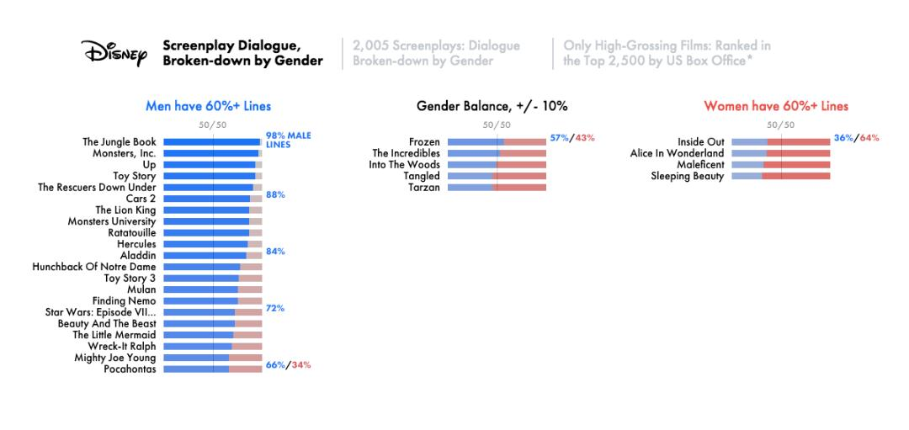

This is my submission for Assignment 1
I copied the example from Film Dialogue Visualization which is attributed to Hanah Anderson & Matt Daniels. I attest that this webpage is of my independent work.
The following visualization shows gender disparity in pop culture by breaking down the scripts for 2000 of the biggest movies in cinema history. It is easy to notice the lack of female-led action movies, and the absolute stark imbalance in gender representation for every genre.
